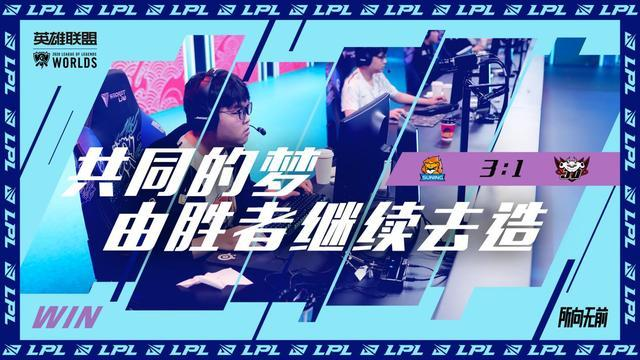

聆听茗说
2020-10-25 08:57:46
北京时间10月25日18时，2020年英雄联盟世界赛总决赛半决赛收官战如期而至。本场比赛对阵的双方分别来自LPL赛区的一号种子TES和三号种子SN。
从大的方面来说，这是一场“决赛晋级战”，从小的方面来说，这也是一场“LPL的内战”。谁赢谁就可以代表LPL站在最终决赛场上，与DWG争夺最后的冠军，为LPL守护这个象征着召唤师最高荣誉的奖杯。那么究竟这两支队伍谁更优一些呢？下面不妨让我们一起来分析一下。
TES在四分之一淘汰赛中，虽然完成了史无前例的“让二追三”，但前两局的溃败，着实让LPL的粉丝们捏了一把冷汗。如果说后面三局比赛中，TES打出了自身实力的话，那么前两局在我看来，更多地反映出的则是TES在状态上的起伏不定，很显然，TES的在近期的状态上存在一定的起伏。
SN在四分之一淘汰赛阶段，以3比1的大比分淘汰了赛前一直被大多数人所看好的JDG，打出了队伍的精气神，提升了队伍的士气，可以说当下SN全员上下的状态正值巅峰，相比于夏季赛的实力和状态，SN提升的可不是一点半点。
提到视野控制，不得不说的队伍就是SN，SN是LPL联赛乃至本届世界赛中所有队伍中视野控制做得最好的队伍之一，如果单就数据而言，SN遥遥领先于TES。 从上面图表可知，SN的分钟插眼数高达4.26个，分均高出TES插眼1.03个，这也就是说假如在场均30分钟的比赛中，SN一场比赛下来要比TES在视野布置上多出将近31个眼位，这31个眼位所提供的视野或所带来的直接或间接收益，在SN这种极其依赖视野为入侵和打团做基础的队伍中，所带来的收益极为恐怖。 如果你觉得上述分析还不够具象的话，那么我们不妨回顾一下上场SN对阵JDG的比赛，在那个BO5中JDG可谓是没少吃视野控制力不足的亏。从一级团的草丛有视野蹲伏被SN反制到Kanavi下路三角草丛蹲伏Gank，完全都暴露在SN的视野监控之下，这都给SN反制JDG留出了充足的时间和空间，SN这两波前期视野上的优势，也直接奠定了SN在这两局整体局势的走向。 而相比之下的TES，在分钟插眼上的布置就明显不足。在排眼效率上TES也是以50.7%不及SN的54.1%，这说明TES在视野的控制力上（分钟插眼和排眼）都不及SN。 可能有的人会说，TES这种个人能力超强的队伍，与其将视野“浪费”在视野布置上，倒不如用在提升装备上来得更为实际。确实，假如这种情况发生在联赛中，我确实觉得无可厚非。但是从本次世界赛TES表现来看，TES引以为傲的个人能力，已不再那么突出，而且在接下来日渐困难的赛程中，任何细微的失误都可能导致之前的努力功亏一篑。因此，我认为TES必须在视野控制上加以重视，因为在接下来水平相差无几的赛程中，稳扎稳打永远比冒进过失来得实际有效。
TES的场均小龙数为2.5条，低于SN的3.1条；在小龙控制率上，SN也是以66.7%的控制率高于TES的54.9%；在场均大龙数上，SN以场均0.8条不及TES的1条；大龙控制率上，SN也是以60%不及TES的68.8%。 从数据上来看，SN在小龙的控制力上优于TES；在大龙的控制力上，TES则是优于SN。 SN在小龙控制力上占优，我觉得其主要原因在于，SN在一血率上领先于TES不少，这说明SN在前期的进攻节奏更为紧凑，战术布置也更为奏效。此外，前面提到过的SN在视野上的优势，也让SN在争夺小龙时占据了一定的优势。上述两方面的原因，都在一定程度上造成了SN在小龙控制力上领先于TES。 而TES在大龙控制力上占优的原因，我认为是基于TES选手出色的个人能力，使得TES在中期的抓机会能力更强，这也是为什么TES即使在前期处于小劣，仍然可以在中后期挽回局面的重要原因。我说的这种情况，TES对阵FNC的四分之一淘汰赛就是最好的证明。在这个BO5中，TES前期处于劣势的对局有四场，而在第三场和第四场前期小劣的情况下，TES都是凭借中期对节奏的掌控和抓机会能力成功挽回局面。 而上述所说的“中期”，正处于大龙刷新时间的前后，此时也正值TES队伍的强势期和发力期，TES队员们在关键装备成型后大龙坑附近团战表现非常不错。因此，在大龙的控制力上也要高出SN不少。
在体现进攻端的数据上，TES的场均击杀数为14.4个，低于SN的16.6个；场均推塔7.3座，低于SN的7.9座；在分钟伤害上，TES分钟输出1997，不及SN的2317；一血率上，TES也是以45.5%不及SN的63.6%。因此，从数据来看，我们可以认为，在进攻端SN的进攻火力强于TES。 在体现防守端的数据上，TES的场均死亡数为9.9次，低于SN的11.5次；场均被推塔数为4.4座，高于SN的3.6座。单纯看防守端数据的话，很显然，SN的死亡数相对多一些，但在防御塔的防守上较为出色。 我们再结合两队攻防端数据综合比较，SN虽然在场均击杀数上（16.6）处于领先，但场均死亡数（11.5）一样高出TES不少。因此想要得知两队在攻防端的稳定性，必须通过KDA来进行比较。在KDA上，TES以场均4.7的KDA稍稍落后于4.8的SN，可以说两队整体上在攻防端的差距微乎其微，都比较稳定，而且都处于本次世界赛的前三名。